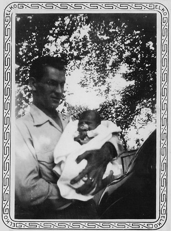
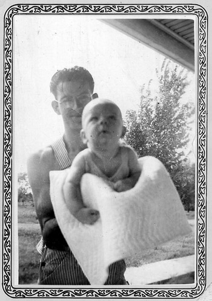
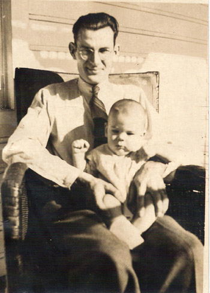

Just like Dorothy, the heroine of The Wizard of Oz, I too was born and raised in Kansas. The date was May 21, 1941; the place was a hospital in Wellington, a small town in south-central Kansas. My father was Terrel Chester Trotter, a school teacher at an even smaller town, Viola, a few miles to the northwest. My mother was Grace Esther Stone, a housewife at that time. Later on, she too became a school teacher.
My father was born (1916) and raised in Geneseo, Kansas, in the central part of the state, the youngest of six children. His father, Alfred, was a railroad worker. His mother, Joanne, took care of the household affairs. Times were hard in those days, especially when the Great Depression came. He had considerable talent for sports in high school days, especially for basketball. I recall my dad telling me that when he decided to go to college, he went to the local bank and borrowed $10. With that grand sum in his pocket, he set off for college, to pursue his post-secondary educational career. (Click HERE to see a newspaper article about him.)
On the maternal side, my mother came from the south-eastern region of the state, in a town called Caney. Her father, Joseph Edwin Stone, was a reasonably wealthy landowner and president of a bank. Known as Captain Stone to his friends and associates, he fought in the U.S. Civil War in the early 1860's. (For more about his early life, go to Joseph E. Stone. Click HERE for his photo.) Her mother, Nancy Mae Wallingford, was a skilled secretary who worked for various businessmen. Born in 1920, my mother often recalled her frustration and resentment when her playmates teased her about her father being old enough to be her grandfather.
Both of my parents were attending Sterling College, in Sterling, Kansas when they met. They were married on July 28, 1940 in Wichita, after the summer session of classes were over. Right away they went to his first teaching position. Dad's salary there earned him the grand sum of $900, $100 per month for the nine-month school term. Certainly not a lot by today's standards, but this was prior to World War II, a different era and world for all.
After I left the hospital, my parents and I lived in various Kansas towns. I recall my parents mentioning such places as Pittsburg, Benedict, Fredonia, Emporia, Madison, Bunker Hill, and my mother's hometown of Caney. There was even a short period of time that we lived in Shenandoah, Iowa. But I don't count that for much, as I don't even remember it.
Here is a photograph, showing me at the ripe old age of 4 weeks. The album that my mother prepared says it was taken in Pittsburg, where my dad was studying for his Master's degree at K.S.T.C. It was the first of the trio that Gloria saw with me at the breakfast table in the Institute. The remaining pair are given below. I was 3 months old in the first picture, taken in Benedict. The 2nd picture was taken at my grandmother Stone's house during Thanksgiving vacation, I was then 6 months old
  
| Comments? Send e-mail. |
Back to top |
Go back to Contents |
{kind=link}